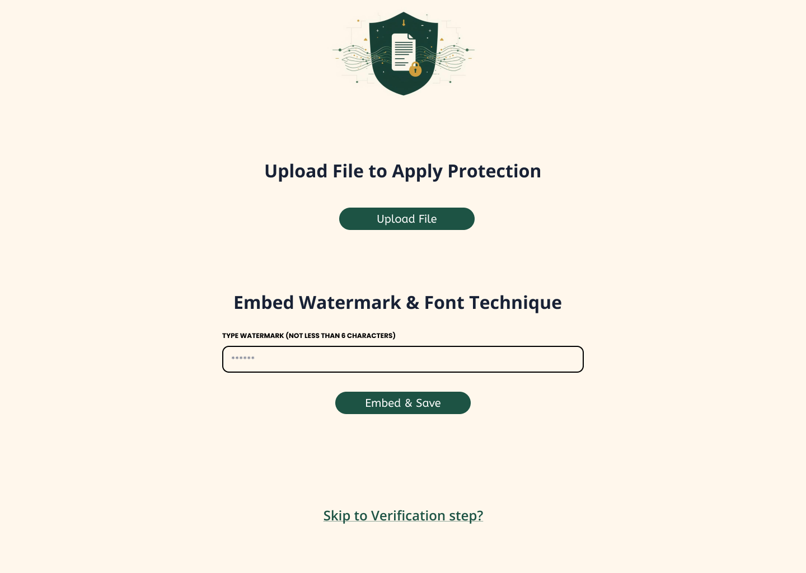
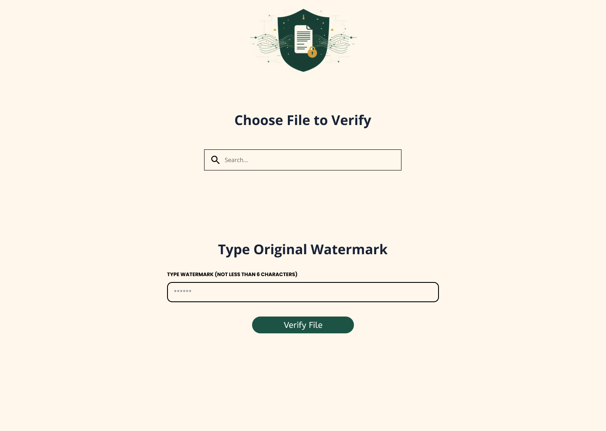
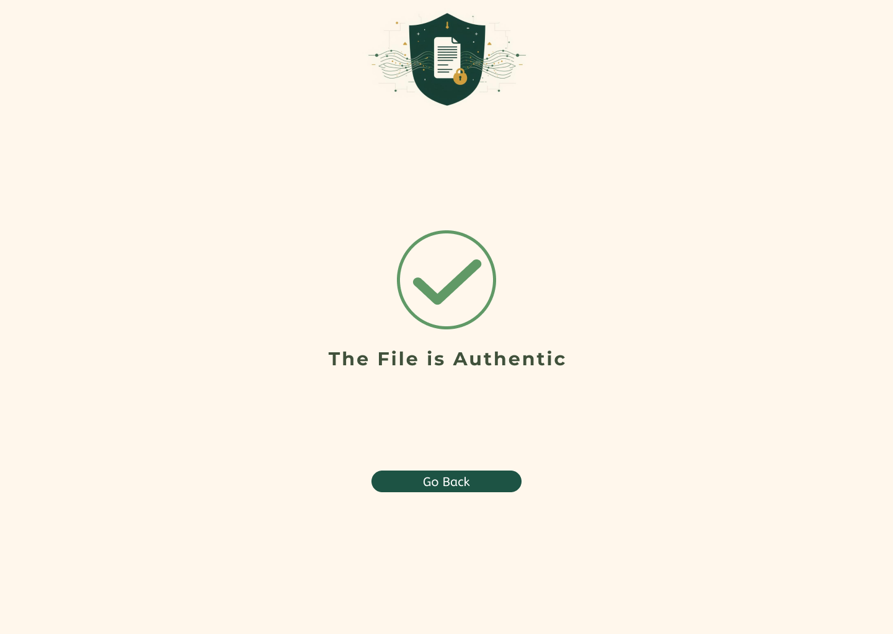
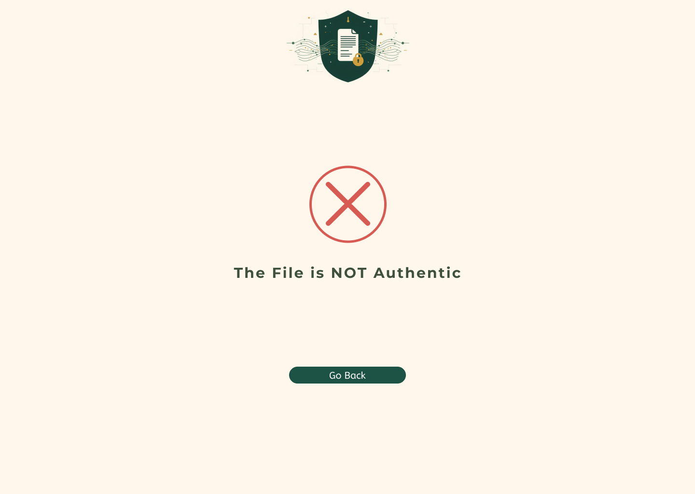

Waqf Protection System
Islamic endowments face serious challenges with document loss and mismanagement, Important Waqf documents often go missing, funds get misused.
This Graduation project presents a secure digital watermarking system designed to protect sensitive Awqaf documents from tampering, unauthorized access, and misuse. The system embeds a hidden watermark chosen by the waqf trustee using
Discrete Wavelet Transform (DWT) combined with either the Least
Significant Bit (LSB) technique or the additive technique, in addition to a font change technique for text-based protection.
These methods ensure document integrity, enable authenticity verification,
and allow quick detection of any modification while preserving the original document quality.
Project Images
Example of Original Waqf Document and Watermarked Waqf Document :


Block Diagrams of the Waqf Protection System :


Use Case Diagram of the Waqf Protection System :

User Interfaces of the Waqf Protection System :




Technologies Used
- Coding : MATLAB, Python, VS Code, Flak
- Encryption Algorithms : Binary Substitution + Ceaser Cipher
- Digital Watermarking : Discrete Wavelet Transform (DWT), LSB and Additive Embedding
- Arabic Font-based steganography
- Designing : Figma, HTML/CSS/JS